Evidence / 01 · Amazon · Variations Discovery
The product was easy to find. The right variant wasn’t.
Making product variations discoverable directly from Search results — without turning the result card into a configurator.
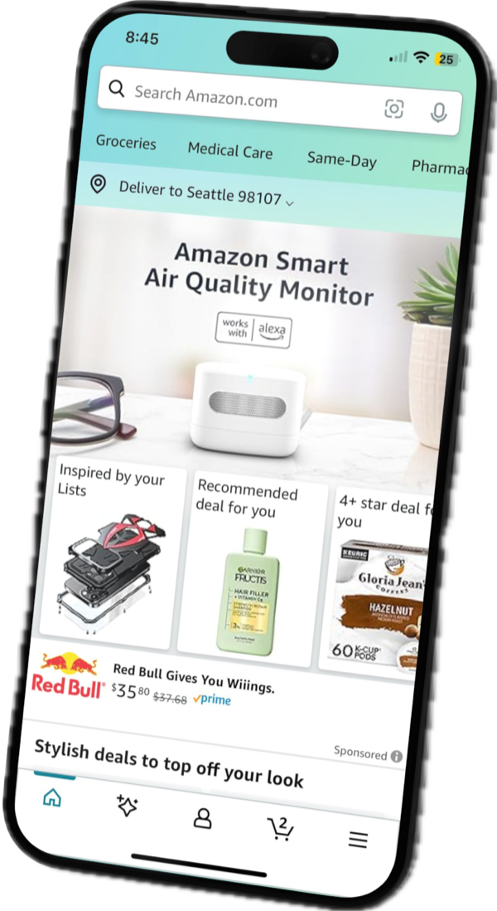
The product was easy to find. The right variant wasn’t.
Search “Tea Tree Special Shampoo” and the result surfaces the 33 fl oz version. Smaller sizes existed — but nothing on the Search result made them discoverable.
Customers who wanted a different size had to land on the wrong one first, then find their way to the right one. The gap wasn’t in the catalogue. It was in what Search chose to show.
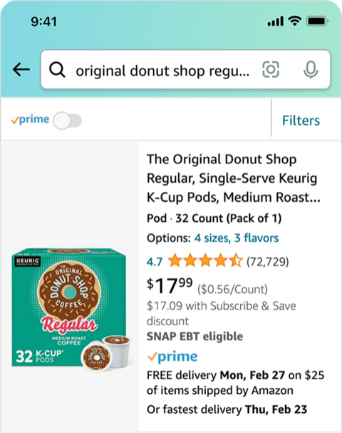
Visibility was the problem — not the concept itself.
Usability research findings. These are research signals, not business metrics.
The existing message wasn’t wrong. It just wasn’t seen. When the concept was made visible, people understood it and acted on it.
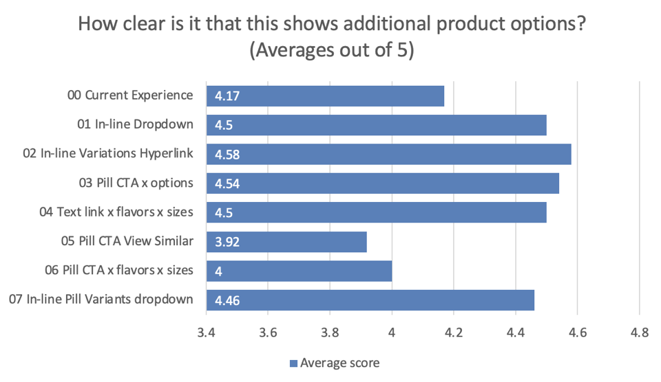
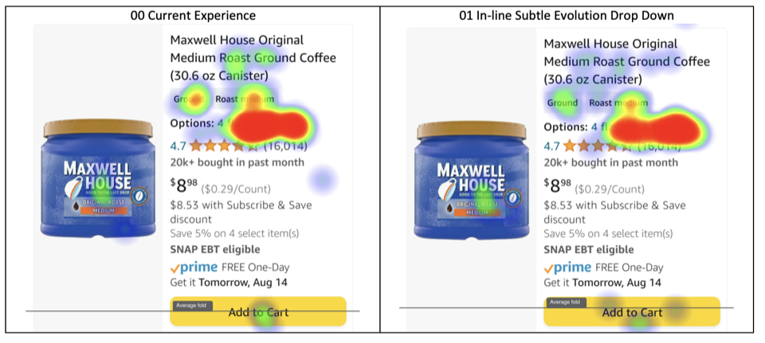
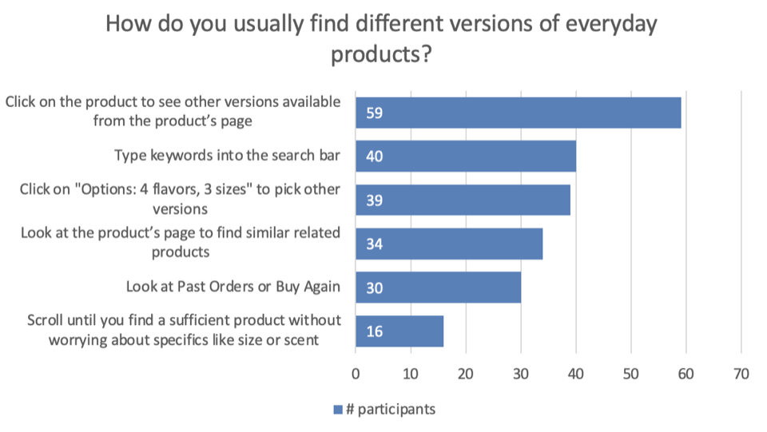
Click any chart to enlarge
Survey the pattern space. Then narrow it.
A lightweight competitive scan — not to copy, but to see how others signal “more options exist” at the result level.
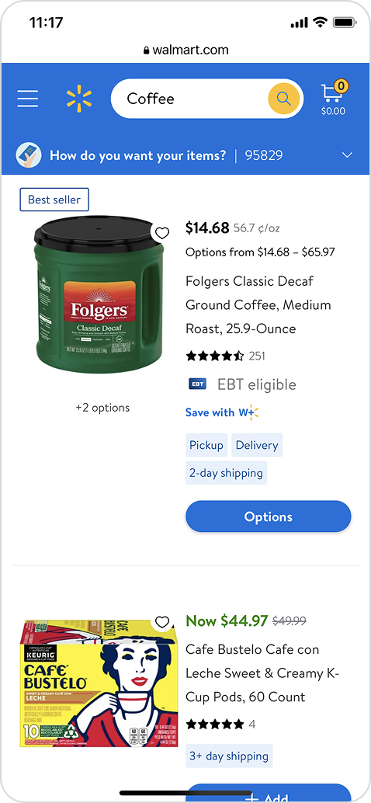
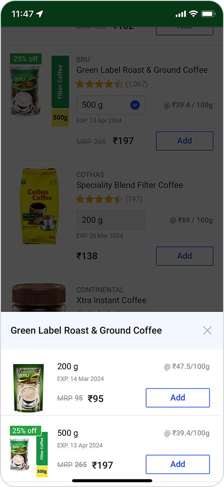
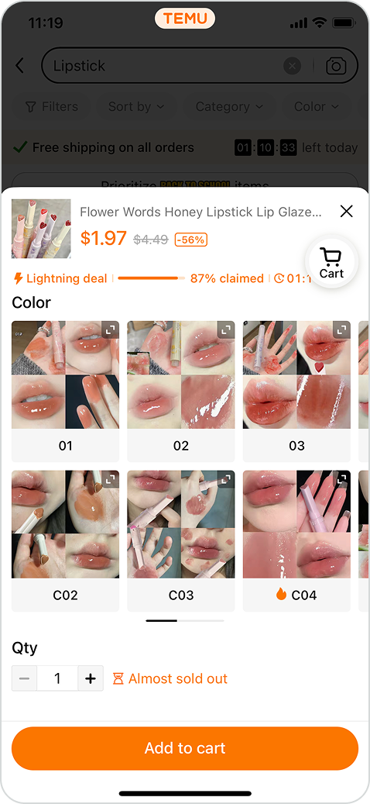
Six directions were explored for the Search result.
- D1[NEEDS CONFIRMATION — direction name]
- D2[NEEDS CONFIRMATION — direction name]
- D3[NEEDS CONFIRMATION — direction name]
- D4[NEEDS CONFIRMATION — direction name]
- D5[NEEDS CONFIRMATION — direction name]
- D6Variation count on the product imageRejected — not feasible at scale
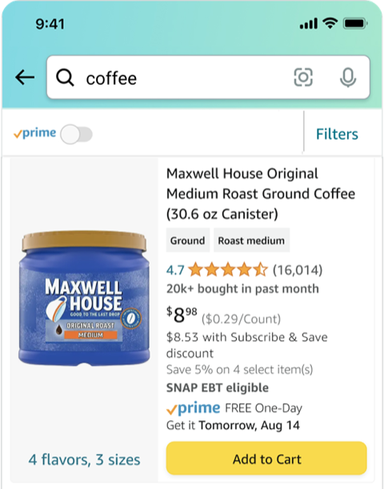
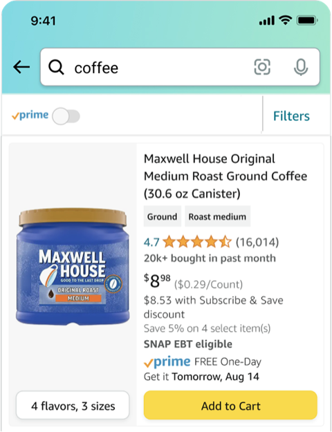
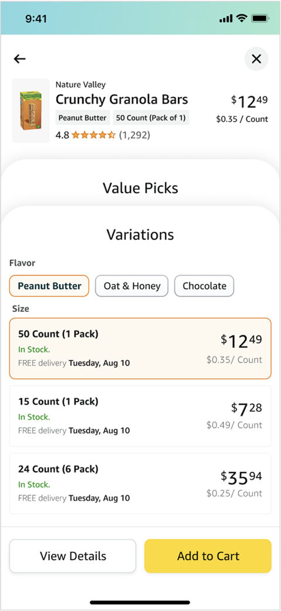
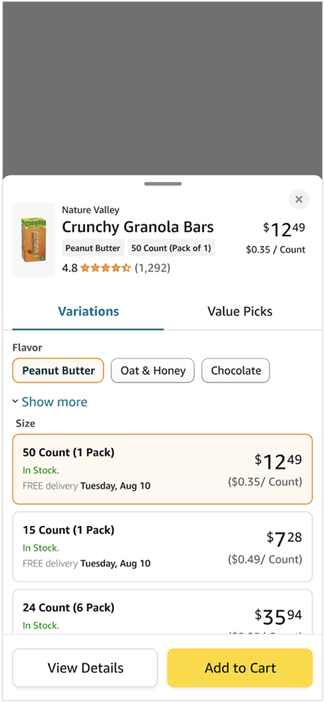
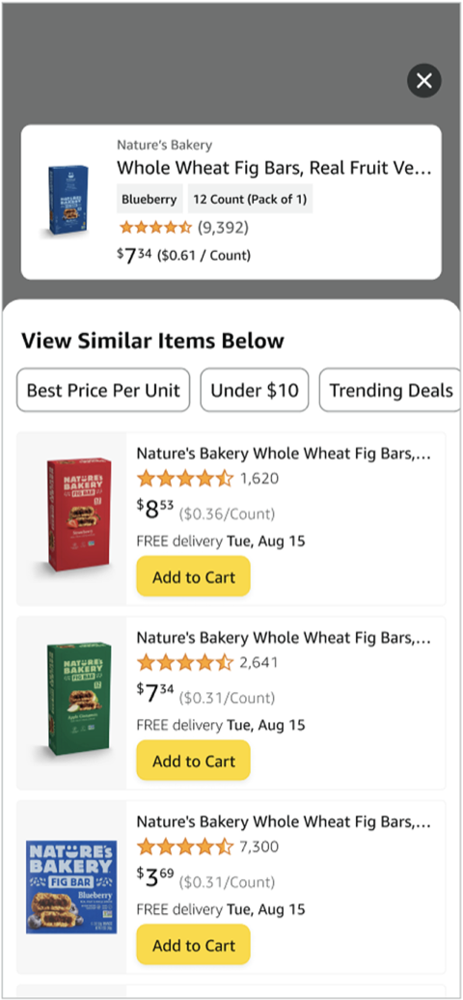
Explored directions — scroll →
Discovery in Search.
Selection in a focused surface.
“Are there other variations?”
“Which variation do you want?”
Two questions. Two surfaces. Neither one asked to do the other’s job.
A signal on the result. A sheet for the choice.
The Search result carries a small, explicit signal that other variations exist. Tapping it opens a focused bottom sheet to choose one — then continue to details or cart without losing your place in Search.
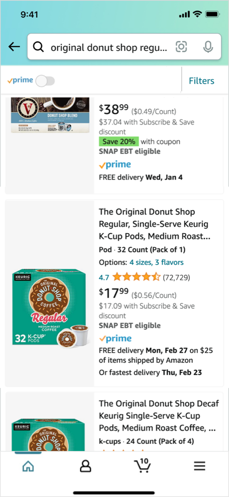
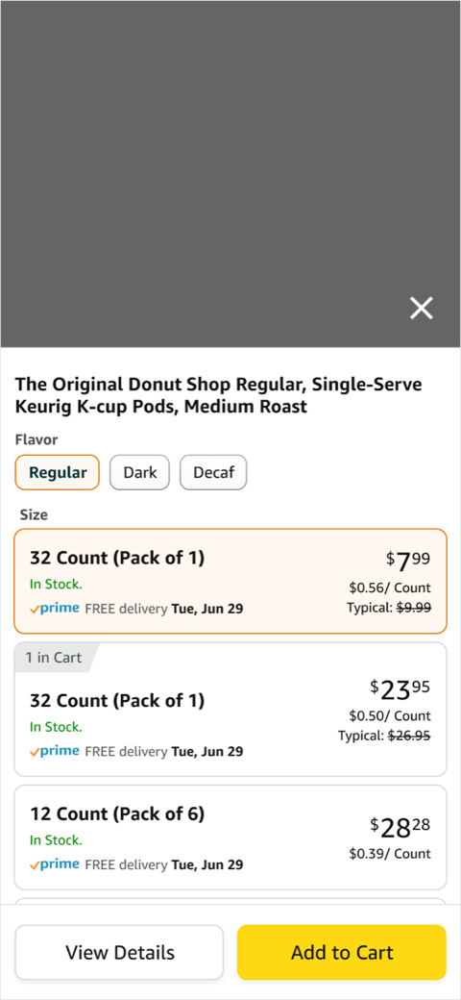
Final design — launched
One pattern. Every catalogue.
The pattern had to hold for any product with variations — not just the shampoo in the example.
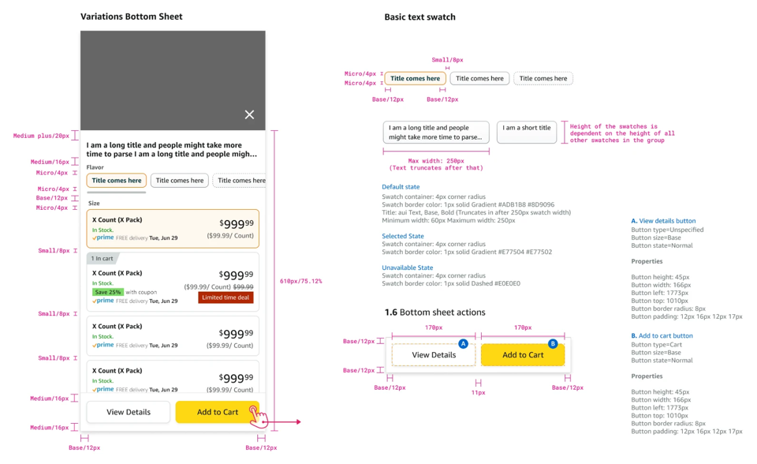
Launched to production.
The pattern shipped to production in Search after six months of research, exploration and iteration with a team of eight.
[POST-LAUNCH METRIC — TO BE CONFIRMED]